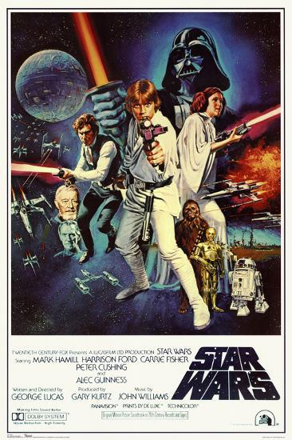

Oppening cral
At the start of each Star Wars movie there is a prolog that sets up the movie.
This is the prologe at the begining of "A New Hope"
"It is a period of civil war. Rebel spaceships, striking from a hidden base, have won their first victory against the evil Galactic Empire. During the battle, Rebel spies managed to steal secret plans to the Empire’s ultimate weapon, the DEATH STAR, and space station with enough power to destroy an entire planet.
Pursued by the Empire’s sinister agents, Princess Leia races home aboard her starship, custodian of the stolen plans that can save her people and restore freedom to the galaxy…."
These prolog's gives you background context as well as any event that lead up to the moments seen in the movies.
